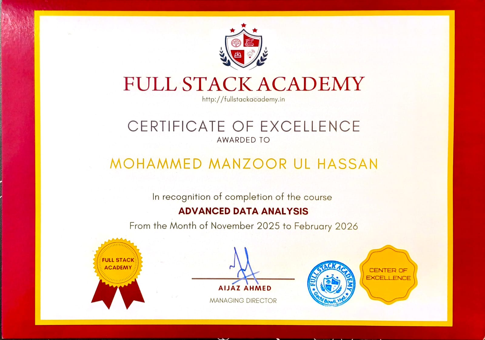
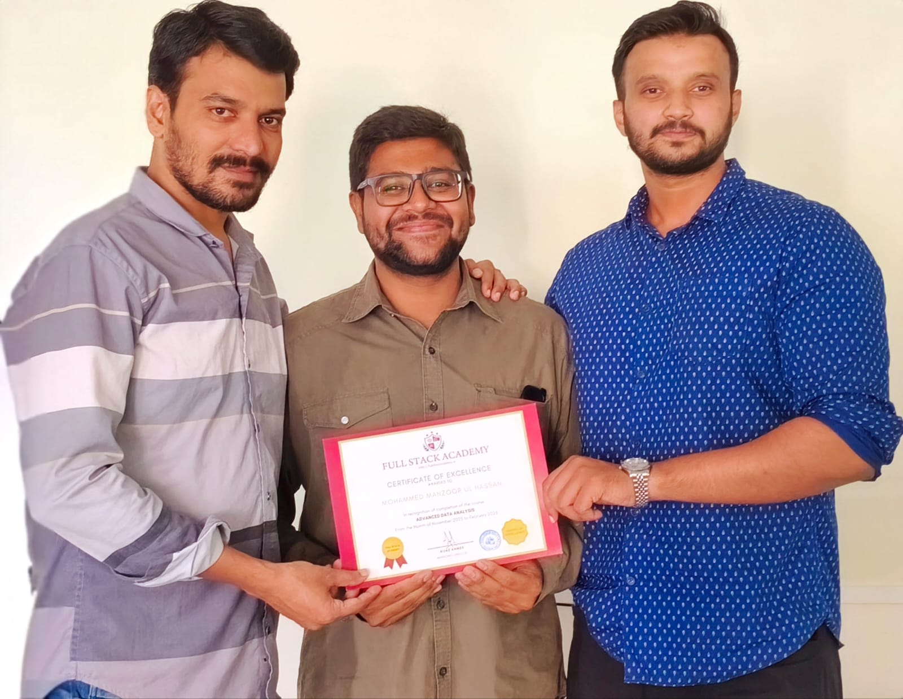

Business Intelligence · Data Storytelling · Generative AI
Mohammed Manzoor Ul Hassan
Data Analyst
Data Analyst · AI Specialist in Progress
I turn messy data into clear insights, interactive dashboards, and practical business stories.
Data Analyst
Scroll to explore
01 / About
Curious about data.
Serious about learning.
I am a Data Analyst focused on turning raw information into useful business insights through data cleaning, SQL analysis, Python-based preprocessing, and BI storytelling.
My learning journey has expanded from analytics into Generative AI and AI-assisted development, with a focus on using modern tools to work smarter and build practical digital experiences.
B.Com (Computer Application)
Shadan College for Boys · Osmania University · 2025
Advanced Data Analysis
Full Stack Academy · Nov 2025–Feb 2026
Current Focus
AI Specialist · Currently learning
02 / Toolkit
A data toolkit with
room to evolve.
TOOLKIT
Data Analytics
Data Analytics Skills
Tools I use to work with, analyze, and communicate data.
03 / Continuous learning
The next chapter is
AI Specialist.
Currently learning
AI Specialist
Building foundations across data science, machine learning, modern LLM applications, and production-oriented AI systems.
Advanced Data AnalysisCompleted
AI SpecialistIn progress
Learning roadmap
04 / Certification
Advanced Data
Analysis.

Full Stack Academy
Certificate of Excellence
Advanced Data Analysis
- Period
- November 2025 – February 2026
- Trainer
- Mr. Yaseen
- Mentor
- Mr. Fayaz

Learning journeyTraining, guidance & continuous growth.
05 / Selected work
Five projects.
Five business stories.
Each project is built around a real analytical question, not just a collection of charts.
06 / How I work
From raw rows
to useful decisions.
01
Understand
Start with the business question and data context.
02
Clean
Handle missing values, duplicates, types and consistency.
03
Analyze
Use SQL, Python and analytical methods to find patterns.
04
Visualize
Build dashboards that communicate the story clearly.
05
Improve
Keep learning and use GenAI to explore better workflows.
07 / Interests
Interests
Coding
Fascinated by tech, I use AI tools to write clean code, explore syntax, and craft complex SQL queries.
Badminton
Play badminton to build focus, discipline, and teamwork.
Vibe Coding
Programming through prompts, using AI to turn creative ideas into functional digital products.
Explore games & experiments →